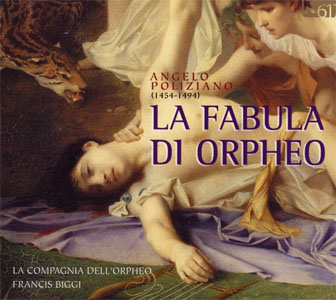
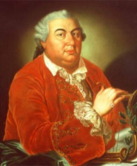

Ce billet n'est en aucune manière une histoire même condensée de l'opéra, un sujet tellement vaste qu'il ne tiendrait pas en dix épais volumes. Il ne se penche modestement que sur un inventaire des procédés auxquels les compositeurs de toutes les époques ont eu recours afin de conduire une action en musique, du moins quand action il y avait. L'objectif peut paraître secondaire voire anodin mais il ne l'est pas tant que cela : de tous temps, un problème difficile s'est posé de garantir l'équilibre entre des récitatifs censés faire progresser l'action et les airs chantés supposés libérer l'émotion accumulée. Un grand nombre de voies ont été explorées avec plus ou moins de bonheur et c'est l'objet de cette chronique de les évoquer en musique, au bilan une autre façon de décliner l'histoire de l'opéra.
L'opéra est un genre a priori improbable qui repose sur un ensembles de conventions (théâtrales et musicales) souvent dures à avaler. La distribution des rôles pose particulièrement problème toutes les fois que les exigences de la voix contrarient la crédibilité des apparences scéniques des acteurs. Jadis, on sacrifiait volontiers les seconds au profit des premiers : l'histoire de l'opéra a longtemps coïncidé avec celle de la voix éclatante et tant pis si l'apparence de Violetta ou de Brünnhilde s'écartait des canons supposés. Maria Callas (à ses débuts) ou Kirsten Flagstadt Birgit Nilsson On ne prêtaient naguère aucune attention à on y meurt en chantant pour les yeux d'une belle qui pourrait être sa mère qu'on lui a régulièrement prédit une mort prochaîne qui ne s'est jamais produite. Celui qui refuse d'adhérer à ces conventions n'est pas fait pour l'opéra et l'opéra n'est pas fait pour lui.
L'opéra ambitionne d'être un art total, mêlant la musique et le chant au théâtre des passions humaines avec tous les à-côtés qu'on peut y incorporer, de la danse à la mise en scène et tous ses accessoires (décors, costumes, éclairages, ...). L'est-il réellement en toutes circonstances, certainement pas. A côté d'oeuvres emblématiques, Boris Godounov, Carmen, Don Giovanni, ..., qui ont évité l'écueil du lieu commun, l'immense majorité des oeuvres du grand répertoire sont substantiellement mais non musicalement tellement banales qu'elles donnent beaucoup de fil à retordre aux metteurs en scène. Le sommet insurpassable a sans doute été atteint par Giuseppe Verdi dans Il Trovatore : on reste stupéfait de l'incroyable qualité de l'inspiration musicale (rien que des tubes !) que son auteur a puisé dans une intrigue aussi ridicule qu'invraisemblable. C'est le genre qui veut cela : les passions humaines n'ayant guère varié selon les époques, il en est résulté que les intrigues développées se sont le plus souvent contentées de tourner en rond entre vengeances amoureuses, jalousies destructrices et amours contrariés. Cette perspective limitée n'a jamais découragé les amateurs passionnés d'opéras qui sont prêts à (re)voir et (ré)entendre Les Noces de Figaro, Carmen ou la Bohème autant de fois qu'on les leur proposera. Chacun aura ses raisons d'y retourner, soit que la mise en scène ou la distribution des rôles ont changé.
Statistiques du MET (En rouge les 4 "HITS")
L'étroitesse du répertoire des grandes maisons d'opéra est parfaitement attestée par un ensemble de statistiques tenues à jour. Les archives du MET sont éloquentes à cet égard : depuis 1883, date de la création du théâtre, 4 opéras ont battu tous les records de programmation : Aïda, La Bohême, Carmen et La Traviata (Retenez les premières lettres, A, B et C, et ajoutez-y la lettre T). Pour plus de détails, le site operabase.com vous a concocté un petit jeu interactif qui devrait ravir les amateurs de statistiques musicales. Ayant compilé une fois pour toutes, depuis la saison 2004-5 les statistiques de productions de par le monde, tous genres vocaux confondus, il vous est possible d'afficher les hits en tous lieux.
https://www.operabase.com/statistics/en
Si on élargit le recensement au monde entier, on observe que lors de la saison 2015-2016 comptabilise comme suit les 10 opéras les plus fréquemment montés : 2 Verdi (Traviata et Rigoletto), 3 Mozart (La Flûte enchantée, Les Noces de Figaro et Don Giovanni), 3 Puccini (Tosca, la Bohème et Madame Butterfly), 1 Bizet (Carmen) et 1 Rossini (Le Barbier de Séville). Bien sûr le hit parade change un peu chaque année mais tant que cela. D'une manière générale, l'Europe privilégie davantage Mozart tandis que l'Amérique du Nord préfère le vérisme italien : entre les saisons 1996-97 et 2006-07, le trio de tête demeure Bohême (300 représentations), Traviata (281) et (l'inattendue) Madame Butterfly (272). Les maisons d'opéras de seconde main sont très nombreuses en Amérique du Nord et comparativement plus éclectiques : c'est généralement vers elles qu'il faut se tourner pour entendre des oeuvres rares qui ne rentreraient pas dans les frais des grandes maisons.
Au bilan, on adore l'opéra ou on le déteste, il y a rarement un milieu. Contrairement à une idée répandue, il est accessible à tout le monde comme le sont les études supérieures sauf qu'il ne faut même pas le bac, seulement une âme prête à vibrer au mystère de la voix nue, capable de rayonner une autre forme d'énergie non solaire. On a de tous temps prédit son extinction au motif que les conventions auxquelles il ne cesse d'obéir appartiennent à des temps révolus mais, en fait, il n'a jamais cessé de bien se porter : plus vivant que jamais il se diversifie tendant à se répandre dans des salles de cinéma spécialisées où chacun peut découvrir les grandes mises en scène du MET avant de se risquer en salle.
Chaliapine dans Boris
Art total, il devrait l'être mais ne l'est de fait pas souvent. Ses ingrédients : un livret qui met en scène les passions humaines éternelles au travers d'une histoire plus ou moins anecdotique. Une musique qui souligne les contours Une mise en scène où les acteurs bougent dans des costumes, des décors, des éclairages dont le luxe est proportionnel aux moyens mis en oeuvre. Et puis il y a la voix : tous les grincheux vous le diront avec quelques raisons, les (très) grandes voix ont disparu, celles qui mûrissaient des années en fûts de chêne avant qu'on les lache dans les rôles écrasants sur des scènes aux dimensions raisonnables. Où sont passés les successeurs de Fedor Chaliapine, d'Enrico Caruso et plus près de nous de John Vickers, Fritz Wunderlich voire de Luciano Pavarotti ? Déjà vers 1850, Berlioz estimait que les salles italiennes mais aussi parisiennes étaient beaucoup trop grandes, privilégiant la recette à l'exercice de l'art vocal. Il professait qu'au-delà d'une distance critique par rapport à la scène, l'auditeur peut bien continuer d'entendre, il ne vibre plus. Le chanteur est alors condamné à s'époumonner plus que de raison au lieu de privilégier la nuance. Que dire alors de nos chanteurs actuels certes fort méritants mais contraints de remplir un MET de 3800 places sans l'aide (officielle ?) d'aucune sonorisation !
Pour le néophyte qui se rend peu ou pas à l'opéra, le genre se résume à quelques grands airs fredonnables sous la douche, à condition d'être (vraiment très) doué. Ces airs fameux ont beau être (fatalement) toujours les mêmes, il semble impossible d'en épuiser la charge émotionnelle, en tous cas ils survivent à toutes les exécutions dans tous les sens du terme. Il ne viendrait à personne l'idée de relire sans cesse le même livre, de réentendre la même pièce de théâtre ou de revoir le même film, or cette addiction est habituelle à l'opéra pour une raison qui tient essentiellement au pouvoir de renouvellement de la voix chantée.
Cette observation apporte la réponse définitive à la question essentielle dont Richard Strauss a fait le sujet de son opéra "Capriccio" : "Prima la musica, dopo le parole" ou "Prima le parole, dopo la musica" ? On vient peut-être à l'opéra pour l'intrigue et/ou sa mise en scène mais on n'y retourne à coup sûr que pour la musique et singulièrement pour le chant. Car la voix humaine n'est jamais pareille à elle-même : elle a cette capacité de réinventer l'oeuvre la mieux connue du monde. La mise en scène syntaxique (décors, éclairages et costumes, conduite de l'action et des acteurs) ne sont plus que des décors pas toujours du meilleur goût d'ailleurs.
Le chant théâtral, comme la musique instrumentale, exige idéalement la présence dans la salle. Ce n'est pas toujours possible ne serait-ce que parce qu'une oeuvre est rarement montée au-delà d'une douzaine de représentations au terme desquelles les protagonistes sont obligés de s'éclipser pour se produire ailleurs.
Tout opéra doit répondre à la question fondamentale de la progression de l'action. Ce ne sont pas les grands airs qui y contribuent car ils ne font qu'exprimer et développer l'émotion du moment, la colère, la vengeance, la jalousie, l'amour, le dépit et tant d'autres. Au cours de l'histoire, quantité de solutions ont été essayées qu'il vaut la peine de rappeler brièvement.
Parmi les écueils les plus difficiles à éviter figure celui de l'alternance entre les récitatifs et les airs. Ce problème a reçu quantité de solutions correspondant à l'époque.
Recitativo cantando : Claudio Monteverdi seconda prattica
Recitativo secco : operia seria
Récitatif classique :
Singspiel :
Opera buffa :
Mélodie infine :
Spechgesang :
https://www.cennarium.com/genre/opera/
naissance de l'opéra
L'opéra est né en Italie, de parents italiens. Les premiers essais ne furent guère que des intermèdes chantés que l'on tente éventuellement de reconstituter aujourd'hui à partir des fragments existants (La Pellegrina (1589), La Dafne (1597), Euridice (1600)). L'acte officiel de baptème du genre entièrement constitué concerne l'Orfeo de Claudio Monteverdi et il mentionne la date du 24 février 1607, date d'ouverture du carnaval à la Cour de Mantoue. Nul ne conteste raisonnablement que l'opéra est né en Italie. Vous trouverez des études d'archéo-musicologie prêtes à soutenir que le Jeu Médiéval est bien antéireur et qu'il représente à sa façon une première tentative d'unir les composantes du drame en musique mais ce sont là des supputations d'experts qui nous éloignent du sujet qui a été dans l'âme l'expression de l'émancipation du chant. Jusqu'à la fin du 16ème siècle celui-ci est resté prisonnier de conventions formelles extrêmement contraignantes dont l'archétype est le madrigal à N voix. De plus en plus sophistiqué pour ne pas dire déconnecté des préoccupations d'un âge nouveau le moment était venu de célébrer la mélodie chantée linéairement en suivant les inflexions d'une voix ne craignant plus de trahir ses émotions. Seule l'Italie pouvait trouver une solution à ce problème urgent car elle possédait le réservoir des voix qui ne lui avait guère été utile jusque-là. Quelques essais timides ont lancé l'initiative d'un genre qui s'est cherché sa voie pendant quelques décennies.
Les premières monodies dans le nouveau stile rappresentativo sont dues à Galilei (œuvre perdue) et à Caccini (Nuove musiche). Peri les surpassa sur le plan de la qualité dramatique avec sa pastorale Dafne, composée entre 1594 et 1595,représentée en 1597 au Palazzo Corsi, puis au carnaval de 1598. Le succès en fut tel qu’on lui demanda un ouvrage du même genre à l’occasion du mariage d’Henri IV et de Marie de Médicis : ce fut Euridice, représentée en 1600 au Palazzo Pitti), écrite en collaboration avec Giulio Caccini (le prologue présenté ci-avant est de Peri); en 1602, chacun termina cette oeuvre de son côté. Euridice est le premier opéra dont la musique nous soit parvenue intégralement (En voici une version estudiantine made in USA, qu ia au moins le mérite d'exister).
Le premier baroque, de Monteverdi à Cavalli, a mêlé le verbe à la musique et la musique au verbe sans chercher à ce qu'une composante écrase l'autre. Cela a été rendu possible par le soin avec lequel le discours a été ponctué par un continuo élargi et toute édition moderne de ce type d'oeuvre doit en tenir compte. Stefano Landi (1590-1655) (La Morte d'Orfeo) Pietro Antonio Cesti (1623-1669) (Orontea et le gigantesque Il Pomo d'Oro, 1667, dont la durée approche les 6 heures !)
le problème majeur qui se pose à la musique de Gluck c'est qu'elle n'a pas encore reçu les attentions nécessaires auxquelles ont eu droit des musiciens parfois bien moins doués. On peut cepndant espérer qu'une génération d'interprètes classiqueux va poser le problème et le résoudre;
L'âge d'or du baroque ...
Un artiste de génie, Claudio Monteverdi (1567-1643), a incarné les débuts de cet âge d'or qui allait durer un siècle.
Claudio Monteverdi
Monteverdi est assurément un des plus grands compositeurs européens, le premier à avoir affiché une éternelle modernité : on peut dire qu'il y a eu l'avant et l'après Monteverdi. Cet artiste détient pourtant le triste record du plus grand nombre de partitions perdues, singulièrement des opéras (Arianna, Le Nozze d'Enea con Lavinia et une bonne douzaine d'autres). Quand on sait le prix des trois qui nous sont parvenus (Orfeo, Il Ritorno di Ulisse in Patria et L'incoronazione di Poppea), on demeure inconsolable. Il est possible que les oeuvres égarées correspondent à des travaux collectifs impliquant le concours d'élèves et que la dispersion du travail a entraîné celle des manuscrits. Rappelons, à l'appui de cette thèse, que le Couronnement de Poppée, l'oeuvre ultime du Maître, nous est parvenue en pièces détachées et que l'on a jamais vraiment élucidé la part prise par chacun, dont Cavalli, dans sa composition. D'ailleurs, le thème de l'air conclusif Pur ti miro, pur ti godo, assurément l'un des plus beaux duos amoureux de l'histoire de la musique, fut apparemment emprunté à l'opéra, Il Pastor regio, de Benedetto Ferrari, un musicien remarquable dont nous aurons à reparler. Tant que vous y êtes, réécoutez tout l'acte 3 de l'opéra dans la version Harnoncourt-Ponnelle et profitez de l'extraordinaire moment théâtral que procure le finale (à partir de 23 min 40 sec) : le couronnement de Poppée (Rachel Yakar), sa jubilation intérieure puis son duo magique avec Néron (Eric Tappy), la perfection est parfois de ce monde.
... et la musique théâtrale
L'expression madrigalesque des sentiments appelait une action et sa mise en scène théâtrale. L'opéra est entré en gestation en Italie, peu avant 1600, le temps que divers compositeurs expérimentent des formes possibles :

Angelo Poliziano : La Fabula di Orfeo
Une oeuvre étonnamment précoce et collective est demeurée sans lendemain immédiat : La Fabula di Orfeo (1480, d'après des poèmes d'Angelo Poliziano (1454-1494)). Due à la collaboration de Serafino dall' Aquilano, Marchetto Cara, Bartolomeo Tromboncino et Michele Pesenti, elle fut la première tentative de mise en musique du mythe souvent reconduit d'Orphée. Le magnifique CD ci-contre, paru chez K617, en ravira plus d'un, davantage que l'ancien enregistrement de l'ensemble Huelgas, pas encore rôdé à l'époque.
La comédie madrigalesque s'esseya à une transposition musicale de la Commedia dell'arte mais elle ne survécut pas longtemps à son côté caricatural qu'aucune intrigue digne de ce nom ne relevait. Les meilleurs spécimens parvenus jusqu'à nous sont dus à : Alessandro Striggio (Il Cicalamento delle Donne al Bucato, 1567), Orazio Vecchi (L'Amfiparnaso, 1594), Giovanni Croce (Triaca musicale, 1595, désolé pour l'interprétation ...) et Adriano Banchieri (La Pazzia senile, 1598 et La Barca di Venezia per Padova, 1605).
Jacopo Peri (1561-1633) trouva le bon chemin, en 1597, avec Dafne, une oeuvre aujourd'hui perdue, puis il récidiva 3 ans plus tard avec Euridice, une commande pour les noces florentines de Henri IV (absent !) et Marie de Médicis. Signalons que la même année, Giulio Caccini (1551-1618) qui avait collaboré à l'oeuvre de Peri, produisit sa propre Euridice, effectivement montée en 1602. De toute évidence, il s'était réservé le meilleur de son inspiration ! Comme Orfeo et Euridice, Dafne fut un thème à la mode et en 1608, Marco da Gagliano (1582-1643) écrivit la sienne en tous points excellente (Soit dit en passant, Dafne sera également le titre du premier opéra allemand, sur une musique d'Heinrich Schütz (1627), malheureusement perdue elle aussi). Toutes ces oeuvres se déroulent cependant encore largement à la troisième personne du singulier, un personnage souvent allégorique commentant l'action davantage qu'il ne la vit.
Bien qu'écrit dans la même veine allégorique, La Rappresentazione di Anima et di Corpo, d'Emilio de Cavalieri (1550-1602) a revendiqué le titre de premier opéra en date. C'est en tous cas ce qu'a affirmé son auteur, contestant de ce fait les prétentions similaires de Jacopo Peri. Aujourd'hui, il n'est pas rare qu'on contente tout le monde en considérant que vu son argument, La Rappresentazione est le premier oratorio profane de l'histoire.
Monteverdi mit, en fait, tout le monde d'accord en 1606 : la toccata initiale d'Orfeo a sonné l'avènement du baroque. Ce fut un coup de tonnerre semblable à ceux qui retentiront 200 et 300 ans plus tard à l'avènement des périodes romantique et moderne (L'Héroïque de Beethoven en 1804 et le Sacre du Printemps de Stravinsky en 1913). Les trois opéras montéverdiens, Orfeo, Ulysse et Poppée sont disponibles en plusieurs versions. On n'a jamais entendu meilleur Orphée que celui d'Eric Tappy (Corboz encore !) mais je ne suis pas certain que le CD reste disponible. Je ne vous querellerai cependant pas si vous préférez l'intégrale Harnoncourt (cfr supra), surtout qu'au DVD, vous profiterez de la mise en scène du regretté Jean-Pierre Ponnelle.
Antonio Vivaldi (1678-1741) apparaît comme le phénomène opératique du baroque finissant : on lui attribue au moins 50 oeuvres mais le compte n'est pas certain. La qualité de cette musique saute aujourd'hui aux oreilles : La Silvia, L'Oraccolo in Messenia, Tito Manlio, Farnace, Orlando finto Pazzo, Griselda, Armida, ..., impossible de citer tous les enregistrements récents, parus chez Virgin ou dans le cadre de l'Edition Vivaldi en cours chez Naïve jusqu'en 2015. Ne vous étonnez pas d'entendre parfois des mouvements entiers déjà entendus ailleurs, c'est l'illustration de la méthode du pasticcio, recyclage d'oeuvres antérieures, un procédé très répandu à une époque où il fallait produire à tour de bras.
Quelques musiciens moins essentiels ont écrit des oeuvres parfaitement estimables : Domenico Scarlatti (1685-1757) (Ottavia Restituita al Trono), Nicola Porpora (1686-1768) (un des grands pourvoyeurs d'airs virtuoses pour le castrat Farinelli : Polifemo) et surtout Leonardo Vinci (1690-1730) (La Partenope, Artaserse, Catone in Utica). Voilà un génie méconnu, normal me direz-vous, avec un nom pareil, n'empêche qu'il n'est pas de la famille de l'illustre inventeur. Même des musiciens parfaitement inconnus ont écrit de belles choses, tels Geminiano Giacomelli (1692-1740) (Merope, bien servi par Cecilia Bartoli), ou l'étonnant Riccardo Broschi (1698-1756) (Merope, Idaspe).
Giovanni Battista Pergolesi (1710-1736) a illuminé de son génie éphémère la génération suivante. Ne passez pas à côté de son opéra, Lo Frate 'nnammurato, il contient tous les ingrédients du Pulcinella de Stavinsky, amusez-vous à les repérer.
L'opéra italien a poursuivi son chemin grâce, entre autres, à Niccolò Jommelli (1714-1774) (Armida Abbandonata), Gennaro Manna (1715-1779) (Lucio Papiro dittatore) et Antonio Mazzoni (1717-1785) (Aminta) et l'opéra "à l'italienne", en langue originale s'il vous plaît, s'est rapidement imposé sur toutes les scènes d'Europe, particulièrement bien servi par deux grands saxons, Georg Friedrich Haendel (1685-1759) et Johann Adolph Hasse (1699-1783).
... et la musique sacrée
Antonio Caldara

Niccolò Jommelli
... et le violon du même nom
... Concertino, Ripieno & Continuo
Voici, pour résumer, quelques musiciens parmi les meilleurs du baroque finissant, qui se sont illustrés dans les trois genres évoqués :
Le coup de frein, du classicisme au romantisme naissant
L'ère baroque s'est achevée en 1750 mais comme toujours un certain flou a existé entre ceux qui se sont attardés et d'autres qui ont anticipé sur le classicisme naissant. Les frères Sammartini, Giuseppe (1695-1750) (Concerto pour flûte) et Giovanni Battista (1700-1775) (Sinfonia en sol majeur), ont déjà écrit en style galant voire Sturm und Drang et Baldassare Galuppi (1706-1785) a fait preuve d'encore plus de curiosité dans des oeuvres ambitieuses, religieuses (Messe pour la libération des esclaves) ou théâtrales (L'Olimpiade, Il Mondo alla Roversa).
Globalement la transition du baroque vers le classicisme a vu le recul de la musique italienne, plutôt mal à l'aise dans un corset trop rigide pour elle. Dès 1700, la concurrence allemande - Bach et Haendel - était devenue forte et à partir de 1750, l'hégémonie autrichienne - Haydn, Mozart, Gluck - acheva de la repousser dans une pénombre relative. La querelle des Gluckistes et des Piccinnistes fut un épisode parisien de ce transfert de compétences : les encyclopédistes, d'Alembert en tête, ardents défenseurs de l'opéra à l'italienne, se sont émus de l'influence grandissante des réformes préconisées par Gluck en vue d'un théâtre moins virtuose et plus proche du drame exprimé. S'ensuivit une querelle de salon que Gluck alimenta davantage que Piccinini et qu'il finit par remporter.
Les musiciens suivants furent talentueux à défaut d'être géniaux : Pietro Nardini (1722-1793) (Concerti pour violon et mieux encore Quatuors à cordes, parus chez Brillant). Niccolò Piccinni (1728-1800) (Didone abbandonata), Giuseppe Sarti (1729-1802) (Oratorio russe), Antonio Sacchini (1730-1786) (Œdipe à Colone), Gaetano Pugnani (1731-1798) (Sinfonia en sol majeur), Giovanni Paisiello (1740-1816) (Concerto n°7 pour piano et surtout Il Barbiere di Siviglia, oeuvre qui annonce clairement Rossini), Andrea Luchesi (1741-1801) (Requiem), ... .
Le talent fut davantage présent à la génération suivante :
Luigi Boccherini (1743-1805) fait partie de ces musiciens auquel le destin a réservé un sort plutôt flatteur, en premier lieu grâce à un Menuet anodin et un Quintette opus 30 imaginatif, deux oeuvres fréquemment arrangées pour ensembles à cordes. Il a largement contribué au développement de la musique de chambre, singulièrement l'art du quintette (à cordes ou avec guitare). J'avoue cependant ne guère accrocher à ces oeuvres largement interchangeables, écrites à une époque où Mozart proposait ses ultimes chefs-d'oeuvre.
Antonio Salieri (1750-1825), qui n'a évidemment pas empoisonné Mozart, mérite une réhabilitation en bonne et due forme : sa musique est d'une réelle efficacité sonore, singulièrement à l'opéra : Les Danaïdes, Axur, Europa riconosciuta, sans oublier le magnifique finale de Prima la Musica e poi le Parole (écoutez à partir de 1 min 16 sec, Mozart a peut-être écouté avant vous, ses Noces de Figaro datent en tous cas de la même année, 1786 !). Si son Requiem ne vaut qu'un petit détour, je recommande sans hésitation les superbes Variations sur le thème des Folies d'Espagne et pourquoi pas la [ROMPU]Symphonie Veneziana qui ne manque effectivement pas d'allure ?
Muzio Clementi (1752-1832), présenté par ailleurs sur ce site, a peut-être fait souffrir des générations d'apprentis pianistes, il n'en demeure pas moins un créateur de premier plan. L'intégrale de son oeuvre pour piano est un must incontestable, disponible à petit prix sous les doigts peu experts de Costantino Mastroprimiano, à prix doux sous ceux, experts, de Pietro Spada et au prix fort sous ceux brillantissimes de Howard Shelley. Notez que le didactique et néanmoins passionnant Gradus ad Parnassum (court extrait joué ici par Danielle Laval) est rarement présent au rendez-vous de ces "intégrales" mais que Naxos vient de combler cette lacune.
Luigi Cherubini (1760-1842) détient le titre de gloire du plus grand compositeur vivant de son temps, enfin c'est Beethoven qui l'a dit et on soupçonne que, muré dans son isolement, il n'était que très imparfaitement informé (Il n'a découvert Schubert que sur son lit de mort, il fréquentait pourtant la même taverne viennoise que lui !). Cela dit, l'oeuvre de Cherubini vaut effectivement une écoute attentive ne serait-ce que pour comprendre le début de ce que Beethoven voulait dire (Requiem en do mineur, Chant sur la mort de Joseph Haydn, sans oublier l'opéra Médée, ressuscité en son temps par Maria Callas).
Quelques compositeurs se sont illustrés dans la pratique virtuose de leur instrument de prédilection, guitare et/ou violon, curieusement souvent associés : Giovanni Battista Viotti (1755-1824), Alessandro Rolla (1757-1841), Ferdinando Carulli (1770-1841), Mauro Giuliani (1781-1829), Giovanni Viotti (1755-1824) et
bien sûr Niccolò Paganini (1782-1840). Quant à Domenico Dragonetti (1763-1846) et Giovanni Bottesini (1821-1889), ils se sont consacrés à la contrebasse, contribuant ainsi au maigre répertoire de cet instrument.
L'envol lyrique
Le chant qui avait déjà connu ses premières heures de gloire virtuose à l'époque baroque va en connaître d'autres, nettement plus lyriques, pendant près de 100 ans. La démocratisation du concert a appelé l'agrandissement des salles et a encouragé l'éclosion de voix amples et belles. Un public de plus en plus fervent s'est constitué à la Scala de Milan, à la Fenice de Venise ou à San Carlo de Naples, trois théâtres inaugurés vers 1778. De nombreux théâtres de province ont également vu le jour, alimentés par un large réservoir de chanteurs de qualité. Il ne restait plus qu'à mettre ces voix en valeurs, ce que firent Gioacchino Rossini (1792-1868), dans la veine pyrotechnique (± 40 opéras, composés en à peine 25 ans), Giuseppe Verdi (1813-1901, ± 35 opéras) dans la veine héroïque et Giacomo Puccini (1858-1924, ± 12 opéras) dans le mode vériste. D'autres ont suivi, avec plus ou moins de bonheur et de goût : Gaspare Spontini (1774-1851), Gaetano Donizetti (1797-1848, ± 70 opéras), Vincenzo Bellini (1801-1835, ± 12 opéras), Amilcare Ponchielli (1834-1886), Arrigo Boito (1842-1918), Alfredo Catalani (1854-1893), Ruggero Leoncavallo (1858-1919), Alberto Franchetti (1860-1942), Pietro Mascagni (1863-1945), Francesco Cilea (1866-1950), Umberto Giordano (1867-1948) et Italo Montemezzi (1875-1952).
Cet univers est fascinant mais son étude sérieuse exigerait des développements qui ne peuvent trouver leur place ici. Je me bornerai donc à faire la publicité du Mefistofele de Arrigo Boito, plus connu comme librettiste de Verdi dans ses deux chefs-d'oeuvre ultimes, Othello et Falstaff. On sait trop peu qu'il fut également un compositeur de valeur et on peut légitimement regretter l'oubli qui frappe ses autres oeuvres scéniques, sauf peut-être Nerone, opéra interrompu par la mort et complété, à des degrés divers, par Arturo Toscanini (qui l'a effectivement créé), Vincenzo Tommasini et Antonio Smareglia.
Toutes ces célébrités ne doivent pas occulter l'existence d'excellents musiciens bien moins connus : d'ascendance suisse, Carlo Evasio Soliva (1791-1853) a écrit La Testa di Bronzo et Giulia e Sesto Pompeio, qui ont fait l'objet de beaux enregistrements, à découvrir par les amateurs du genre. Saverio Mercadante (1795-1870) (Il Lamento del Bardo, Emma d'Antiochia),
Giovanni Pacini (1796-1867) (L'ultimo Giorno di Pompei), Lauro Rossi (1810-1885) (Cleopatra) et Filippo Marchetti (1831-1902) (Romeo e Giulietta) ont également contribué au genre. Les amateurs de raretés vocales italiennes peuvent se tourner avec bonheur vers des enregistrements Bongiovanni ou vers l'album Opera italiana paru chez Neos (40 CD pour 40 euros !)
La musique italienne s'étant largement concentrée sur l'opéra, on admirera que quelques artistes du cru aient eu le courage de résister à cette mode du temps, au risque avéré de se priver d'une large audience :
Giovanni Sgambati (1843-1914) fut un pianiste-compositeur surtout à l'aise dans la pratique de son instrument. Ecoutez cet académiquement beau Prélude & Fugue, opus 6, ou encore, pour le plaisir, l'un des bis favoris de Nelson Frère, une adaptation très réussie d'un air célèbre de Gluck. Son Concerto pour piano propose un instrument brillant hélas flanqué d'un orchestre anémique.
Luigi Mancinelli (1848-1921) mériterait que les éditeurs s'intéressent davantage à son oeuvre, certes légère mais très plaisante comme en atteste cet enregistrement Naxos reprenant Scene Veneziane & Cleopatra.
Giuseppe Martucci (1856-1909) a été nettement plus heureux avec ses 2 symphonies (n°1, n°2) et ses 2 concertos pour piano (n°1, n°2), à découvrir !
Ferruccio Busoni
Ermanno Wolf-Ferrari
Sans pour autant délaisser l'opéra mais en cessant de le privilégier, deux musiciens très différents, Ferruccio Busoni (1866-1924) et Ermanno Wolf-Ferrari (1876-1948), ont accéléré le renouveau instrumental italien. Il convient d'ajouter qu'ils présentaient, l'un et l'autre, le mélange assez rare des sensibilités italienne et allemande et ceci explique peut-être cela :
Busoni a passé l'essentiel de son existence en Allemagne dont il a adopté une forme de rigueur qui le rapproche esthétiquement de Max Reger. Son goût pour le contrepoint l'a incité à transcrire pour le piano nombre d'oeuvres de Bach, pour le plus grand bonheur de pianistes avides d'épaisseur sonore (Chaconne BW 1004, Choral "Nun komm der Heiden Heiland" BWV 659). Busoni s'est également rendu célèbre grâce à son grandiose et wagnérien Concerto pour piano, choeur & orchestre, une oeuvre miraculeusement préservée de la grandiloquence. Son remarquable opéra Doktor Faust est au répertoire des maisons exigeantes, au contraire d'Arlecchino, nettement plus anecdotique.
Wolf-Ferrari a davantage hérité de sa mère vénitienne que de son père allemand et c'est tant mieux. Autant l'oeuvre de Busoni est dense et sévère, autant celle de Wolf-Ferrari (Concertos pour violon et pour cor anglais) est légère et parfois sentimentale (sans honte, j'adore !). Les Joyaux de la Madonne (célèbre Intermezzo) est son opéra le plus connu mais écoutez aussi le prélude de Il Campiello : d'accord l'oeuvre, écrite en 1936, est anachronique mais quel bonheur !
Quatre musiciens particulièrement attachants, Ottorino Respighi (1879-1936), Ildebrando Pizzetti (1880-1968), Gian Francesco Malipiero (1882-1973) et Alfredo Casella (1883-1947), ont représenté l'Italie dans le concert européen du début du 20ème siècle, jusqu'à ce qu'un fascisme précoce ne vienne mettre un frein à cette belle vitalité :
Des quatre, Respighi est le plus justement célèbre, ayant brillé dans tous les genres et tous les styles (Concerto grégorien, Sinfonia Drammatica). Sauf les grincheux, tout le monde trouve son bonheur quelque part dans l'oeuvre de Respighi, depuis la célèbre Trilogie romaine (Pins de Rome, Fontaines de Rome, Fêtes romaines) jusqu'aux 3 joyeuses Suites dans le style ancien (Suite n°2, ne manquez pas l'alerte Bergamasque à partir de 14:21). La Flamma est son opéra le plus joué.
Pizzetti n'a pas connu les mêmes honneurs et cependant il fut l'égal de Respighi : certes, sa Sonate, datée de 1942, sonne sans complexe comme issue d'un autre âge mais Assassinio nella cattedrale figure parmi les grands opéras du 20ème siècle. De même si Canti della stagione alta nage à contre-courant, en plein romantisme, le Quatuor à cordes est plus sévère. Quoi qu'il en soit, l'inspiration est au rendez-vous.
Etrangement, c'est Malipiero qui a été le mieux servi par les studios d'enregistrements, en particulier sa musique symphonique : 11 symphonies (n°8, n°11), 6 concertos pour piano (n°6) et 2 concertos pour violon (n°1). C'est une anomalie dont le sens m'échappe.
L'oeuvre de Casella a mis davantage de temps à s'imposer que celle de Malipiero alors qu'elle lui est supérieure en tous points. Ses 3 symphonies (n°1, n°2 et n°3) qui ont enfin trouvé des interprètes à leur mesure sont remarquables de même que A Notte Alta, pour piano & orchestre. Voici encore le Concerto pour cordes, piano & percussions.
L'époque contemporaine
Quelques opéras contemporains. Nouvelle cuisine et vieilles marmites
http://operacritiques.free.fr/css/index.php?2012/07/23/2023-une-brassee-de-bons-operas-contemporains-classes-par-courants
Messiaen, Schostakovitch, Ligeti, Pizzetti,
Maria di Venosa (Francesco d'Avalos)
(Louis Andriessen)
Kajia Saarihao (L'amour de loin (1999))
Philip Glass
John Adams
Wolfgang Rihm
Penderecki Ubu Rex
Benjamin In the little hill
Unsuk Chin (Alice in Wonderland)
John Corigliano The Gosths of Versailles
Sallinen The palace
Manfred Trojahn (geb. 1949) Oreste
Tobias Picker Thérèse Raquin et surtout Emmeline.
Georg Friedrich Haas: Bluthaus (2011) Armel Opera Festival (Budapest) investit autant dans la création de nouvelles oeuvres que dans la découverte de jeunes talents lyriques.
Luigi Dallapiccola
Plus ancien donc peut-être plus sage, Luigi Dallapiccola (1904-1975) est celui par qui vous devez commencer cette exploration, d'autant que son oeuvre est tout simplement magistrale. Il n'a jamais cherché à étaler sa science, elle s'est imposée naturellement au travers d'oeuvres aussi diverses que Vol de Nuit, d'après Saint Exupéry, Sonatina Canonica, d'après Paganini, Il Prigioniero, d'après Villiers de l'Isle-Adam et Charles de Coster ou Tartiniana I & Tartiniana II, d'après Tartini. Vous l'avez observé, les références sont multiples et elles font mouche.
Je n'ai hélas trouvé qu'un seul enregistrement d'une oeuvre de Flavio Testi (1923- ) et je le regrette. Cet extrait de Saül, étonnant de conviction sonore, exige qu'on nous en propose d'autres.
Deux musiciens émergent cependant avec un maximum de force, sans doute les compositeurs les plus remarquables de l'Italie contemporaine :
Ivan Fedele (1953- ) écrit de la bonne musique moderne capable de satisfaire les auditeurs exigeant clarté et complexité (33 noms, Notturno, La Chute de la Maison Usher). Ne manquez pas davantage Etudes Australes I, II & IV, de l'excellent piano moderne. "Le ali di Cantorun" est un chef-d'oeuvre qui a eu la chance d'être superbement dirigé par Pierre Boulez hélas j'ai perdu la trace de l'enregistrement
Fausto Romitelli (1963-2004) (La sabbia del tiempo, The Nameless City) a également écrit des oeuvres extrêmement convaincantes : quel dommage qu'il ait disparu si jeune ! Deux CD made in Belgium (Ensembles Musiques nouvelles et Ictus) ont parus chez Cypres, qui doivent figurer en bonne place sur votre liste de cadeaux pour Noël, on vous remerciera dans 20 ans !
Le label Naxos s'intéresse à la musique écrite par Elisabetta Brusa (1954- ), plusieurs volumes sont déjà disponibles. Le néo-tonalisme de bon aloi de la Symphonie n°1 rend la découverte agréable.
Le cinéma italien, particulièrement créatif après la deuxième guerre mondiale, a donné du boulot aux collègues musiciens. Deux compositeurs célèbres ont fait preuve d'inspiration à cette occasion :
Le nom de Nino Rota (1911-1979) a été fréquemment associé à celui de Federico Fellini (La Strada, La dolce Vita, Huit et demi, Satyricon, Amarcord, Casanova et Prova d'orchestra). Rota a également beaucoup écrit dans tous les genres traditionnels : 4 Symphonies (n°1), trois fois plus de Concertos (pour piano, pour cordes), de la musique de chambre (Nonette, Persepio) sans compter une douzaine d'opéras, fort oubliés il est vrai. Son oeuvre plaisante a fait l'objet de nombreux enregistrements.
Les temps modernes
Il fut un temps où les modèles de l'opéra moderne se résumaient à Wozzek, Die Soldaten et Lear d'Aribert Reimann (1936- ).
Aujourd'hui et chaque jour davantage la question n'est plus "Prima la musica, dopo le parole ?" mais "Prima la scenografia, dopo la musica" ?